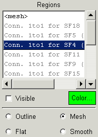

The region list is filled in when a zone is selected from the Zone List. For a structured zone, the first region will be the exterior faces of the volume mesh, identified by <mesh>. The last six regions will be the minimum and maximum bounding surfaces, identified by <imin> and <imax> with similar designations for the j and k boundaries. For unstructured zones, the regions are identified by the names of the element sets.
The connectivities and boundary conditions are identified by the name with a colon (:) and type identifier postpended to the name. The type identifiers are 1to1 for 1to1 connectivities, conn for general connectivities, and boco for boundary conditions.
The visibility of the currently highlighted region may be controlled with the Visible button. If on, the region name will be shown in black and the region will be drawn based on the selected drawing mode. If off, the region will not be drawn and the region name will be shown in gray. The region visibility state may be toggled by double-clicking Mouse Button 1 on the region name. NOTE: If the zone visibility is off, none of the regions will be drawn, regardless of their visibility state.
The Color button shows the current color for the region, which is initially set to the color for the zone. Clicking on the Color button will bring up a color selection panel to allow changing the region color.
The mode in which the region is drawn is set by the radio buttons on the bottom. Outline will draw only the region outlines; Mesh draws the mesh; and Flat and Smooth draw the region as either flat or smooth shading.
Clicking Mouse Button-3 on a region name will pop-up a window similar to the one below, listing the properties of the region.